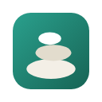
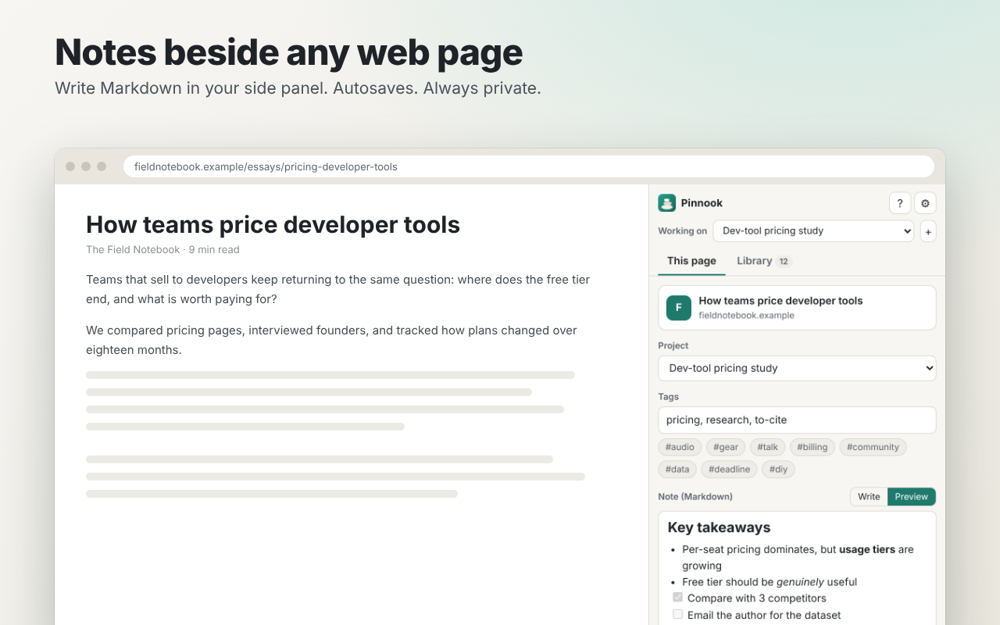
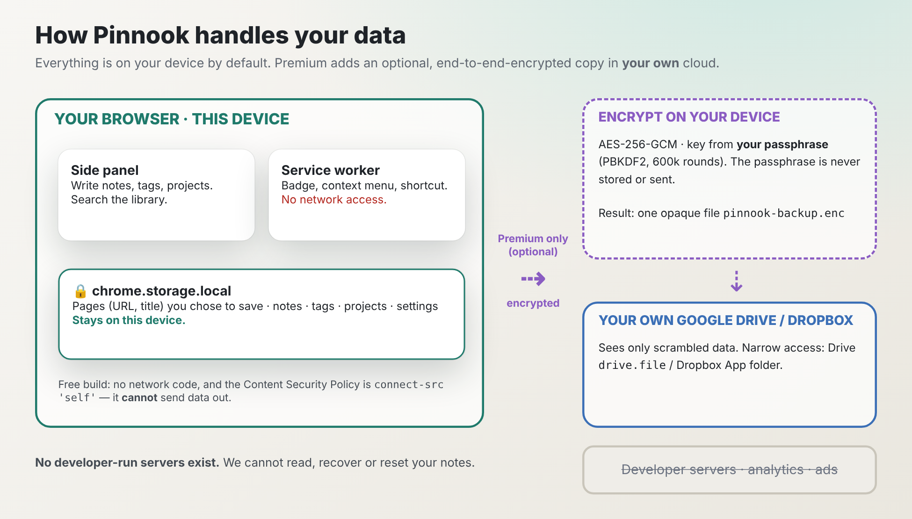

Notes beside any web page. Private by design.
Write Markdown notes, add tags and group pages into projects, right in Chrome's side panel. Everything stays on your device.
Add to ChromeRead the help
What you get
Side-panel notes
Markdown with autosave, tasks and quotes. Select text on a page and add it to your note from the right-click menu.
Projects & tags
Group pages by project and domain. Pinnook suggests the project you are working on.
Fast library search
Search titles, notes, tags and URLs instantly, all on your device.
Yours to keep
Export everything as JSON or Markdown. Import and merge any time. No account.
Privacy, plainly
| Question | Answer |
|---|---|
| Where are my notes stored? | In Chrome's local extension storage on your device. |
| Does the free version use the network? | No. It contains no network code and its security policy blocks outside connections. |
| Does Pinnook read pages I don't save? | No. Only the title and address of pages you choose to save are stored. |
| Analytics, ads, accounts? | None. |

Optional Premium (coming in v1.1)
End-to-end-encrypted backup and sync through your own Google Drive or Dropbox. Encrypted on your device with a passphrase only you know. Free features stay free.
FAQ
Does it work in Incognito?
No. Pinnook deliberately opts out of Incognito so private browsing is never recorded.
Can the developer read my notes?
No. There are no developer servers. We cannot read, recover or reset your notes.
Can I check what it does?
Yes. The permissions are listed on the store page and on chrome://extensions. The free version asks for no website access and contains no network code.
Is it affiliated with Google or Dropbox?
No. Pinnook is an independent product. Google Drive and Dropbox are trademarks of their owners.
Add to Chrome v1.0.0